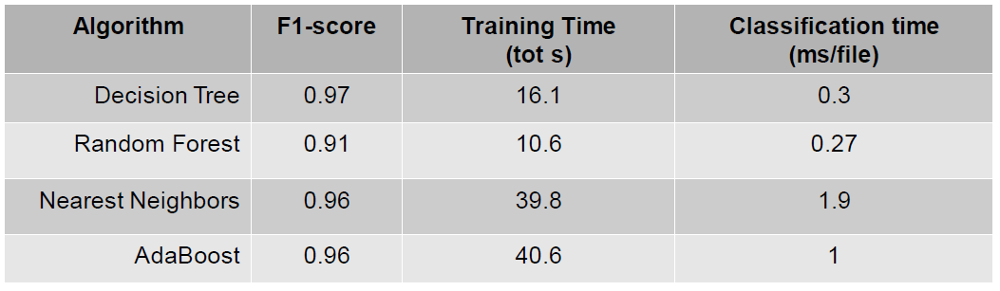
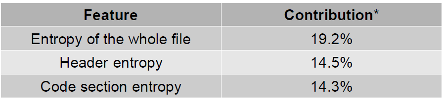

Static Analysis¶
Example¶
int malicious_behavior() {
printf("I am evil!!!\n");
}
int main(int argc , char argv) {
malicious_behavior();
}
Static Analysis: Signatures are sequences of strings¶
- Principle: look for relevant strings in the binary ( that’s your signature
- How do the signatures look like?
- composed of characteristic strings extracted from the malware
- other property that can be quickly verified without executing, e.g., hash and size
- How do we extract the signature from a binary?
- major challenge, but when you’ve it you’re happy!
- avoid false positive, false negative
- Before talking about the extraction, let us see what we can do when we have it!
Static Analysis: processing new files¶
- Challenge: How to detect a potential new malware M1?
- Solution:
- Compile all signatures of known malwares in a regular expression (classification)
- and scan the binary of M1 to see if any part matches (detection)
- This is a Pattern matching approach (remember your translator class!)
- It is mostly performed via automata:
- Turn regular expression into automaton
- Walk M1 file in the automaton and check if you reach an accepting state
- A well known tool:
YARA
Malware detection static via YARA¶
Yara IS:
- Elegant way to specify any type of regular expression
- Fast and efficient at detection
- Look for syntactic properties of file
- Does not execute the sample during analysis (i.e. static)
- Plugins to python and other languages
- Protections against REGEX attacks
- Remember : Regular expression are turned into automaton
- If automaton is deterministic then one path
- If automaton is non deterministic which arises for complex regular expressions), then exponential number of paths
- Example:
- regular expression:
[a-z]+@[a-z]+([a-z \.]+.]+\.)+[a-z]+for mail
- regular expression:
Yara IS NOT:
- a virus scanner (but act very similar to existing anti virus)
- a correlation engine
- a bayesian classifier
- Or more generally: an artificial intelligence
Rules can be very complex, but can be written in a very effective manner [3]
rule 2018ISOLLATutorialYaraSimpler {
meta:
description = "Simpler Yara rule for ISOLA 2018"
strings:
$evil_string = "i am evil" wide ascii
condition:
$evil_string
}
Main difficulty: how to write good (effective) YARA rules? I.e. How to identify and extract malicious knowledge from a known database?
Things to avoid:
- Rules that generate many false positives and
- Rules that match only the specific sample and are not much better than a hashvalue.
Solutions:
Comparison with cleanware database (reduce false positive
 Happens when the rule claims it is a malware, but it is
not)
Happens when the rule claims it is a malware, but it is
not)- Take a huge database of cleanware
- Take a malware
- Create a rule with strings that are specific to malware, and not present (or almost not present) in the cleanware
May generate plenty of strings
- Take the x best ones
- Best has to be defined.
yarGen: Keep strings that are likely to not be in goodware.Avoid false positive: Do not claim it is a malware if it notDanger:- Rules may become too specific
- Strings that were present in the sample used as malware may not be part of the malware
- And hence not present in another iteration of the same malware
- Consequence: no detection!
Example https://www.nextron-systems.com/2015/02/16/write-simple-sound-yara-rules/ (ToREAD)
- Good practice (avoid false negative, less specific)Best practice by Florian Roth:
- Very specific strings ($s) s) hard indicators
for a malicious sampleEx: typos: „ Micorsoft Corportation “ instead of „Microsoft Corporation“ and Monnitor “ instead of „
Rare strings
likely that they do not appear in
goodware samples, but possibleStrings that look common
(Optional) e.g. yarGen
output strings that do not seem to be specific but didn’t
appear in the goodware string databaseQuestion? How to rank the importance of the strings in the rules?
Automatized in a tool: yarGen¶
Author: Florian Roth
Repository: https://github.com/Neo23x0/yarGen
Purpose: automatic creation of YARA rules
« The main principle is the creation of YARA rules from strings found in malware files while removing all strings that also appear in goodware files. »
Process¶

Static Analysis: Syntactic Pattern Matching: Obfuscation¶
https://hal.inria.fr/hal-01964222/file/main.pdf (ToRead)
int malicious_behavior() {
printf("I am");
printf(" evil!!!\n");
}
int main(int argc , char argv) {
malicious_behavior();
}
- Easy to obfuscate, just split the strings in the code… with
strncatandstrcpy - More advanced technique: encoding (byte code, xor + key)
char * keystream = "ISOLA - TUTORIAL -2018 ";
char * obf = "\x00\x73\x2e\x21\x61\x48\x22\x3c\x38\x6e \x73\x68\x4b";
char * xor(char * str) {
int i;
char *cipherstr;
int len = strlen(keystream);
cipherstr = malloc(len * sizeof(char));
for (i = 0; i < len ; i ++) {
cipherstr[i] = str [i] ^ keystream[i];
if(cipherstr[i] == ’\n’) {
cipherstr[i + 1] = ’\0’;
break;
}
}
return cipherstr;
}
Problem: Packing Detection¶
- Code gets compressed/encrypted and only decrypted at runtime (possibly one piece at the time)
- Very effective against any static technique: as hard as breaking encryption
- Difficulties:
- Hard to know if the program is packed
- And by who necessary to unpack
- Solution: To unpack we need to know which technique was used.
- YARA
Import r2;
rule UPX {
strings: $upx = "UPX"
condition:
r2.section("UPX0","") and r2.section("UPX1","") and $upx
}
Machine learning: we use signature based Machine Learning classification
training:
- Extract relevant features from binaries
- Link features to pack/unpack informations + name of packer (if possible, Based on your knowledge)
- Create a ground truth for training ML classifiers (test several algorithms, Generalization step.)
testing:
Use the result to decide if a file is packed
- Efficiency is very important, two questions: Packed or unpacked? Packed by who?
What is a feature ?
| Static features: | Dynamic features: |
|---|---|
|
|

Packing Detection: Ground Truth¶
ML techniques are as good as the data used to train them. Binaries are chosen for ground truth by combining:
| Hash based Proprietary analyzer | Static signatures | Proprietary tools |
|---|---|---|
|
|
Often done with manual experience and hash based |
//Experimental file packed by us:
//Not known to the proprietary tool
"./tests/binary1": {
"PROPRIETARY_TOOL": Unpacked ,
"YARA_SIGNATURE": TheMida v1.802
"PEID_SIGNATURE": TheMida v1.8
}
//Packed with modified NSIS:
//Not know to static signatures
"./tests/binary2": {
"PROPRIETARY_TOOL": NSIS,
"YARA_SIGNATURE": Unpacked
"PEID_SIGNATURE": Unpacked
}
//Consensus on UPX:
//Added to the ground truth
"./tests/binary3": {
"PROPRIETARY_TOOL": UPX,
"YARA_SIGNATURE": UPX
"PEID_SIGNATURE": UPX
}

Packing Detection: ML Classifiers¶
We test ML classifiers of various complexity:
- Naive Bayesian Classifier : performs Bayesian hypothesis testing assuming independence of features
- Decision Tree : determines order of feature testing based on greedy entropy minimization
- Random Forest : uses majority voting on multiple Decision Trees to avoid local maxima
- Nearest Neighbors : clusters similar elements according to a distance metric
- …
Algorithms are evaluated on:
- Effectiveness (by F-score)
- Training time
- Classification time
Packing Detection: Preliminary Results¶
Preliminary results on ML classifiers tested:
- Database of 160k unpacked and 40k packed PE files
- Used 80% of database for training, 20% for testing
- All classifiers are very effective (even simple ones)
- Decision tree is very cost effective
- Decide classifier to use according to available time
Preliminary results on most relevant features: [4]
- Specific bytes after entry point
- Presence of non standard sections
- Use of rarely used system calls
 Situation Situation |
Next |
|---|---|
|
|
| [3] | https://yara.readthedocs.io/en/stable/ |
| [4] | * computed as mean decrease impurity on tree based algorithms |